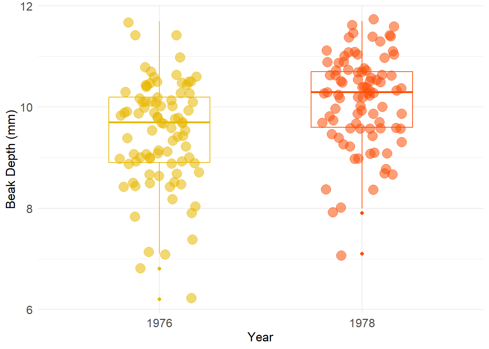
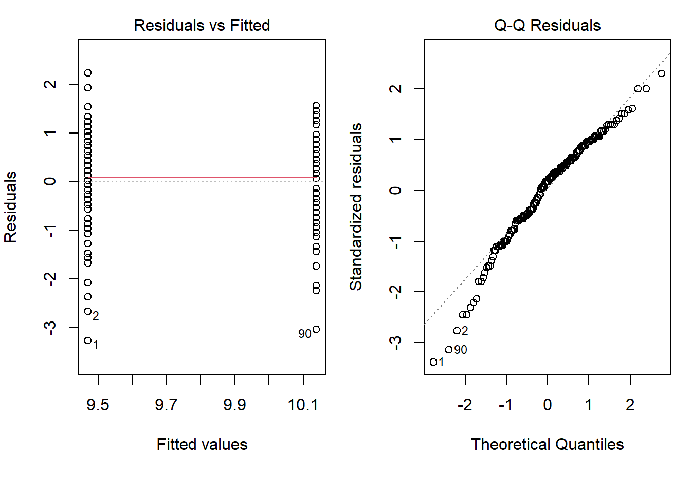
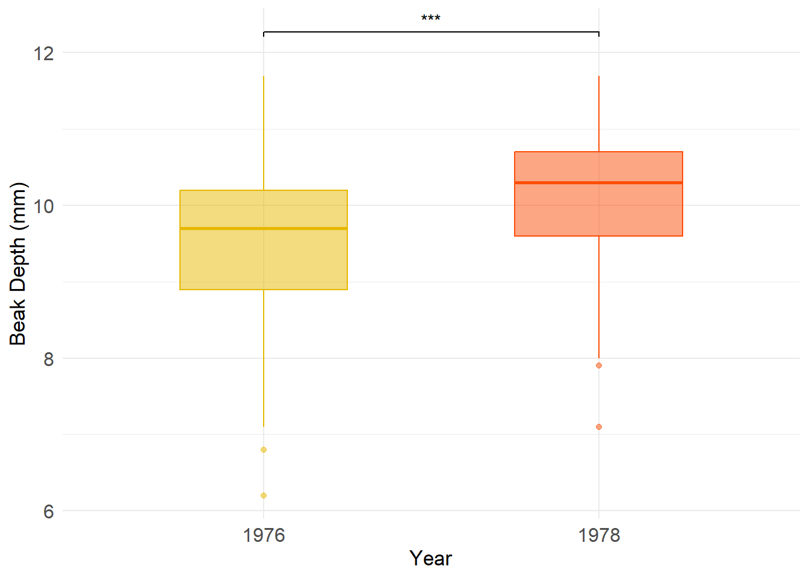

renv::restore()- The library is already synchronized with the lockfile.Natural selection is a fundamental mechanism of evolutionary change, driving the adaptation of organisms to their environments. In species that are highly adapted to specific environmental conditions, environmental changes can exert strong selective pressures, leading to significant shifts in the population. Darwin’s finches, such as the medium ground finch (Geospiza fortis), provide an exemplary case of how natural selection operates in response to such changes1,2. These finches primarily feed on seeds, the availability of which is strongly influenced by climatic conditions, particularly yearly rainfall patterns3. Consequently, significant changes in rainfall, such as severe droughts can have significant impacts on finch populations by altering seed availability.
A notable example of this phenomenon is the severe drought of 1977, which had profound effects on the finch population of Daphne Major 4. Rainfall during the wet season plummeted from 127 mm in 1976 to just 24 mm in 1977, resulting in a sharp decline in seed abundance. This drastic reduction in available food led to an 85% decline in the G. fortis population. This decline was strongly correlated with the scarcity of small seeds, which are typically favored by these birds due to the ease of processing them4. As small seeds became less available, the finches were forced to shift their feeding behavior, consuming larger, harder seeds that they would typically avoid due to the high energetic costs associated with breaking them open. This dietary shift would have likely introduced new selection pressures, favoring individuals with beaks capable of handling these tougher seeds. Notably, deeper beaks have been shown to deeper and wider beaks dissipate stress more effectively and reduce peak stress magnitudes, allowing finches to crack hard seeds with reduced risk of beak fracture5. Thus, under the conditions of food scarcity brought on by the drought, it is expected that grater beak depths would have provided a selective advantage, enabling the finches to survive and reproduce. As such, we would expect to see an increase in the frequency of depper beaks in the finch population after the drought.
Given the significant environmental changes caused by the drought of 1977, I hypothesise that by comparing populations of G. fortis finches from before and after the drought, notable differences will be observed in their beak depths. Specifically, I expect that the finches measured after the drought, will exhibit greater beak depths when compared to those measured before the drought.
To investigate the differences in beak morphology across G. fortis finches, I will be utilizing the case0201 dataset from the Sleuth3 package, a simplified subset of a long-term study conducted by Peter and Rosemary Grant in the 1980s3. Their study focused on the medium ground finch (G. fortis) on the Galápagos Island of Daphne Major from 1975 to 1978. Over this period, the Grants banded and measured all the finches across more than 20 generations, collecting data on several external morphological characters as well as many environmental parameters. Specifically, the case0201 dataset includes beak depth measurements for 89 finches caught in 1976 (the year before the drought) and 89 finches caught in 1978 (the year after the drought). This data will enable me to assess whether the severe drought of 1977 could have caused changes in beak morphology, in particular increases in beak depth, in response to the environmental pressures it imposed.
To investigate the effect of the 1977 drought on the beak depth of G. fortis finches, I will perform a linear model analysis. This model will allow us to examine how beak depth differs between the two groups (1976 and 1978), with year as the independent variable. By fitting this model, we will obtain both point estimates and confidence intervals for the effect of year on beak depth, providing insight into the drought’s potential influence on finch beak morphology.
Notably, the linear model relies on certain assumptions, including homoscedasticity (constant variance of residuals) and the normality of residuals.
To assess these assumptions, I will first visually inspect diagnostic plots:
A Residuals vs. Fitted plot will be used to assess homoscedasticity, which assumes that the variance of residuals is constant across all levels of the fitted values. A random scatter of points around zero (no discernible pattern) would suggests that the homoscedasticity assumption is met.
A Normal Q-Q plot will be used to evaluate whether the residuals follow a normal distribution. If the residuals are normally distributed, the points would closely follow the diagonal line in the plot.
I will also conduct formal statistical tests:
A Levene’s test will be used to test the assumption of homoscedasticity. This test evaluates whether the variance of the residuals is constant across groups.
A Shapiro-Wilk test will be applied to assess the normality of the residuals. A significant result (p-value < 0.05) would suggest that the residuals are not normally distributed.
By evaluating these assumptions, I aim to strengthen the reliability and interpretability of the analysis, ensuring transparency in assessing the appropriateness of the statistical methods used.
Important note: Comprehensive instructions, including all prerequisites and detailed guidelines for running this analysis and relevant code, are available in the README file of my GitHub repository for this project. Please refer to the README to ensure proper setup and usage.
renv::restore()- The library is already synchronized with the lockfile.# Source library loading fucntion
source(here::here("functions", "libraries.R"))
# Load necessary libraries
load_libraries()#Load the raw data and save it
write.csv(case0201, here("data", "finches_raw.csv")) #To write data to csv
finches_raw <- read.csv(here("data","finches_raw.csv")) #Load data# Quick look at the case0201 dataset
head(finches_raw) # Outputs first few rows of the dataset X Year Depth
1 1 1976 6.2
2 2 1976 6.8
3 3 1976 7.1
4 4 1976 7.1
5 5 1976 7.4
6 6 1976 7.8After reviewing the raw data, it was important to clean it to improve accessibility and facilitate the analysis process. For a detailed description of the cleaning functions, refer to the cleaning.R file.
# Source the cleaning function
source(here("functions", "cleaning.R"))
# Apply cleaning function
finches_clean <- cleaning_data(finches_raw)
# Save the clean data
write_csv(finches_clean, here("data", "finches_clean.csv"))Before proceeding with statistical modeling, it is useful to conduct a preliminary visual examination of the data to assess the variation within each group and between the two years.
# Source the plotting functions
source(here("functions", "plotting.R"))
# Apply plot function
exploratory_boxplot <- plot_exploratory_boxplot(finches_clean)
# Suppress the null device output
invisible(capture.output(
# Apply save function
save_plot_svg(
finches_clean, # Data
"figures/exploratory_boxplot.svg", # Filename (and path: folder/name)
size = 15, # Sizing
scaling = 1, # Scaling
plot_function = plot_exploratory_boxplot)# Plot function
))
exploratory_boxplot # Show plot
Figure 1: Boxplot comparing the distribution of finches beak depths in 1976 and 1978.
The distribution of beak depth in finches before (1976) and after (1978) the drought is shown in Figure 1. The data suggest a potential shift in the population’s beak depth, as the median beak depth in 1978 appears to be higher than in 1976. However, the plot also reveals substantial variation within both years, with considerable overlap in the interquartile ranges. While this exploratory analysis highlights a possible change in beak depth, it does not provide evidence for statistical significance. To assess whether the observed differences are meaningful, formal statistical tests are required.
A linear model is be employed to evaluate the effect of the drought on beak depth. In this model, “year” is treated as the explanatory variable, while “beak_depth_mm” is the response variable.
# Fit a linear model
linear_model <- lm(beak_depth_mm ~ year, data = finches_clean)To assess the assumptions of the linear model, diagnostic plots were generated to evaluate both homoscedasticity and normality of the residuals.
# Source the plotting functions
source(here("functions", "plotting.R"))
# Apply plot function
diagnostic_plots <- plot_diagnostics(linear_model)
# Suppress the null device output
invisible(capture.output(
# Apply save function
save_plot_svg(
finches_clean,
"figures/exploratory_boxplot.svg",
size = 15,
scaling = 1,
plot_function = plot_diagnostics)
))Figure 2: Diagnostic plots for assessing model assumptions. On the left panel, the Residuals vs Fitted plot assesses homoscedasticity (constant variance of the residuals). The right panel displays a Normal Q-Q plot, which is used to assess the normality of the residuals.
The Residuals vs Fitted plot in Figure 2 indicates that the assumption of homoscedasticity is likely met. The spread of residuals appears relatively consistent across both years (1976 and 1978), with both groups showing comparable levels of divergence from the fitted line. This suggests that the variance of residuals is similar for the two groups, supporting the assumption that the residuals have constant variance across the data. The lack of a clear pattern or systematic trend in the plot further reinforces this conclusion. In contrast, the Normal Q-Q plot shows a mild departure from the normality assumption. The residuals deviate from the expected normal distribution, particularly at the extremes (the tails of the distribution). This deviation may affect the validity of statistical inference, such as the calculation of confidence intervals and significance tests.
To formally evaluate these assumptions, additional statistical tests are necessary.
A Levene’s test was conducted to formally test the homogeneity of variance in beak depths between the two finch populations
# Perform Levene's test
levene_test <- leveneTest(linear_model)
levene_test # Display resultsLevene's Test for Homogeneity of Variance (center = median)
Df F value Pr(>F)
group 1 1.361 0.2449
176 The non-significant p-value (p = 0.2449 >> 0.05) indicates that there is no evidence to reject the null hypothesis of equal variances in beak depth measurements between the two populations of finches. This result, combined with the Residuals vs. Fitted plot, which equally seems to show that both groups have a similar spread of residuals around the central line, suggests that the assumption of homoscedasticity is satisfied.
# Perform the Shapiro-Wilk test
shapiro_test <- shapiro.test(resid(linear_model))
shapiro_test # Display results
Shapiro-Wilk normality test
data: resid(linear_model)
W = 0.97012, p-value = 0.0007184The statistically significant p-value (p = 0.0007184 << 0.05) indicates a departure from normality in the distribution of beak depth values. This result aligns with the deviations observed in the Normal Q-Q plot, where the data exhibited some deviation from the expected distribution at the extremes.
While the violation of normality should be noted, the central limit theorem implies that, despite non-normality, the model’s estimates could remain reliable. It is important to acknowledge that the violation of normality can influence the precision of predictions, especially in smaller samples, but in this case, the large dataset likely mitigates these concerns. Therefore, while the normality assumption is not fully satisfied, the analysis remains robust, and the conclusions drawn from the linear model are likely valid.
# Source the plotting functions
source(here("functions", "plotting.R"))
# Apply plot fucntion
summary_table <- generate_summary_table(
linear_model, # The linear model to summarize
term_label = "1976 vs 1978", # Label for the term being compared (years 1976 and 1978)
effect_size_label = "Estimate", # Custom label for effect size (e.g., the regression coefficient)
p_value_label = "p-value", # Custom label for the p-value from the model output
conf_lower_label = "Lower CI", # Custom label for the lower bound of the confidence interval
conf_upper_label = "Upper CI" # Custom label for the upper bound of the confidence interval
)
# Display the table
print(summary_table)# A tibble: 1 × 5
Year_Effect Estimate `p-value` `Lower CI` `Upper CI`
<chr> <dbl> <dbl> <dbl> <dbl>
1 1976 vs 1978 0.669 0 0.381 0.956Table 1: Summary of the linear model for the effect of year (1976 vs. 1978) on beak depth. The table shows the effect size (estimate), the p-value, and the confidence interval (95% CI) for the year variable.
# Source the plotting functions
source(here("functions", "plotting.R"))
# Apply plot function
results_boxplot <- plot_results_boxplot(finches_clean)
# Suppress the null device output
invisible(capture.output(
# Apply save function
save_plot_svg(
finches_clean,
"figures/results_boxplot.svg",
size = 15,
scaling = 1,
plot_function = plot_results_boxplot)
))
results_boxplot # Show plot
Figure 3: Boxplot illustrating the differences in beak depth between 1976 and 1978. Statistical significance between the two years is denoted by asterisks (* p < 0.001)
The linear model analysis explored the effect of year (1976 vs. 1978) on beak depth in G. fortis finches, specifically testing the hypothesis that significant environmental changes, particularly the 1977 drought, could have caused changes in beak morphology. The results, as summarized in Table 1, provide compelling evidence that beak depth increased significantly in 1978 compared to 1976 (p < 0.001), confirming the hypothesis that the drought may have exerted a selective pressure favoring finches with larger beaks. This shift in beak morphology is visually illustrated in Figure 3, which compares the beak depths of finches in the two years. The boxplot clearly shows a marked increase in the mean beak depth in 1978, reinforcing the conclusion that notable differences are observed in beak depth across these two populations. The estimated effect size for the difference in beak depth between 1976 and 1978 is 0.6685 mm, meaning that the average beak depth in 1978 was approximately 0.6685 mm larger than in 1976. This effect size is both statistically significant and biologically meaningful, with the 95% confidence interval ranging from 0.381 mm to 0.956 mm.
The analysis of beak depth in G. fortis finches before and after the 1977 drought provides compelling evidence for natural selection acting on morphological traits in response to environmental pressures. The observed increase in beak depth by 1978 supports the hypothesis that the drought, which reduced small seed availability and increased the reliance on tougher, larger seeds, conferred a selective advantage to finches with deeper beaks. These adaptations likely enhanced the survival and reproductive success of individuals capable of efficiently cracking the harder seeds that dominated the post-drought landscape.
The estimated increase of 0.6685 mm in beak depth, though seemingly small, is both statistically significant and biologically relevant in that even small differences in beak morphology can have profound biomechanical implications. Indeed slight increases in beak depth can significantly enhance the forces a bird can exert when cracking seeds, reducing stress magnitudes and minimizing fracture risks5. These advantages may have been critical for accessing and processing harder seeds, which may have resulted in the difference between survival and starvation in post-drought, resource-limited environments.
While the analysis provides robust evidence for natural selection influencing beak morphology in G. fortis, it is constrained by several methodological limitations. Although the sample size is extensive, the focus on a single morphological trait—beak depth—limits the scope of inference. Beak morphology is multifaceted, with traits such as beak width also playing a critical role in seed-cracking efficiency. Beak width, in particular, has been shown to affect biomechanical properties by dissipating stress and reducing the risk of structural failure during feeding5. Including such measures in future studies could offer a more comprehensive understanding of the relationship between morphology and function. Additionally, the analysis is based solely on “year” as a categorical factor, without direct inclusion of environmental variables such as seed availability, seed hardness, or climatic conditions like precipitation. These variables are crucial for understanding the selective pressures driving morphological changes. Without this data, conclusions about the drivers of selection remain inferential. Instead, incorporating ecological and climatic data in future studies would allow for regression analyses, potentially identifying direct correlations between environmental changes and morphological adaptations. Finally, the temporal scope of the study, limited to two years, restricts our ability to assess whether observed changes represent enduring evolutionary shifts or transient responses to acute environmental stressors. Longitudinal studies spanning multiple generations, coupled with genetic analyses, are necessary to evaluate the persistence of these changes and to elucidate the genetic and phenotypic mechanisms underlying adaptation.
In conclusion, while the data is partially consistent with natural selection acting on beak depth in G. fortis in response to the 1977 drought, the evidence is not definitive. The observed increase in beak depth suggests an adaptive response to changes in seed availability, however, the available data restricts the ability to fully correlate these morphological changes with the selective pressures imposed by the drought. Additional research is needed to robustly link ecological changes to evolutionary outcomes in this system.